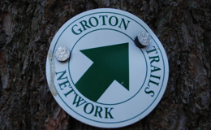

The Groton Trails Network

The purpose of this site is to inform and connect people with the vast network of trails in Groton, MA. With over 100 trails spread across over 100 miles, the town enjoys one of the richest trail networks in the state.
Our goal is to provide a user-friendly trail system that encourages residents to enjoy the open spaces and conservation land in Groton. We encourage people to see a different perspective of Groton by exploring our trails and parts of town never seen from the roadways. We promote the trails by setting up and staffing booths during GrotonFest, organizing hikes and the annual Groton Town Forest Trail Race.
The Trails Committee is responsible for developing new trails and maintaining the existing trails network in Groton. We evaluate trail routes, consider safety issues, address parking and access, mark new trails, and revise the trails map to reflect additions and changes. We also organize hikes and work parties and are always looking for more participants.
Each month the Trails Committee meets to discuss the status of ongoing projects, plan new projects, schedule work parties, update our trails projects list of current and future tasks, and report on problems and discuss solutions. The Committee is comprised of the following individuals:
Committee Members:
Joachim H. Preiss (Chairman)
Paul G. Funch (Vice Chairman)
Edward S. Bretschneider
Bruce H. Easom
Wendy A. Good
Stephen A. Legge
John F. Lynch
David H. Minott
Alan W. Taylor
Welcome to the Groton Trails Network

About 25% of the land in the Town of Groton is protected space open to the public.

